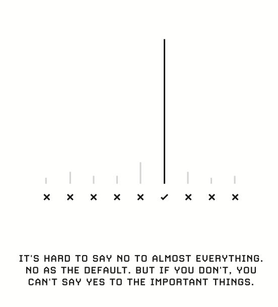

productivity.htm
Notes on productivity
"Small compounds in productivity can have a large impact in your long-term career"
From Balaji Srinivasan
How to focus
Doing more than one thing is very hard. You can do one big thing, and you can attach lots of subroutines to that. But if you’re trying to do more than one big thing, you have to decide every single moment of the day, am I spending time on A or B?
I lie awake at night and think, Okay, here’s what I’ve learned today. How does that fit into my broad collection of ideas? Where are the contradictions, overlaps, and so on?
Your email inbox is a to-do list other people write for you. Task length and importance are not related to recently received.
What you choose to load into your brain first thing in the morn- ing is the most precious, precious space. Perhaps your first few hours should be offline with pen and paper, writing things out. Some offline time is good, so you don’t just immediately jack into the internet
I write a lot of stuff longhand because it forces focus. There are zero interruptions. Later in the day, I take those pieces of paper, a draft of a book chapter or something, and type it in a digital file.
Drive your work forward before the rest of the world rushes in. You know it’s going to rush in, but you want to hold it back and drive your focus forward as much as you can, and then let the water of the day rush in.

I want to maximize the total number of hours I can work, including weekdays and weekends. I might want to work for sixteen hours one day, then rest the next day. I do meetings only one day a week. The rest of the week, I am totally free to work spontaneously. That’s my single biggest productivity hack: stack all meetings on (for example) Monday and Thurs- day. Then you are always no more than three days from a meeting, yet you get five focus days per week.
What to learn
The newest technical papers and the oldest books are the best sources of arbitrage. They contain the least popular facts and the most monetizable truths.
Technical journals and old books are what I read with intent, as opposed to tech news, which I get in my peripheral vision.
How to learn
To learn technical content fast, I just start doing problems. I don’t even read the text until I get stuck on a problem. Espe- cially in technical topics, if you know foundations (differential equations, statistics, or Maxwell’s equations, for example), you often can start calculating and see where you hit a roadblock.
it’s easier to try and fail than to go and look up the documentation. Reading the documentation front to back is much harder before you start trying. Start, then learn. You have to learn while doing.
You can’t really learn something without using it. One day of immersion in a new language beats weeks of book learning.
One day of trying to build something with a programming language beats weeks of theory too. If you talk to people who teach computer programming, they’ll tell you just “learning to code” is hard. You have to learn to do something with code
Learning with intent to use filters down information, and you can snap things into use immediately. That’s why I think a purpose-driven life is good. You have a purpose, and you think often about what that purpose is.
How to understand concepts:
- Verbal—explain in words
- Visual—make a graph
- Algebraic—write the equation
- Numerical—do a numerical example
- Computational—code a solver or algorithm
- Historical—tell where it came from
From Sam Altman
If you're not feeling productive:
- Your task might not be clear
- Your project might not be defined
- You might not want to work on it
- It might not be connected to your values (or you don't see the clear connection)
One of the most important beliefs is that you can learn whatever you want; and that you can improve quickly.
Three key pillars:
- Make sure to get the important shit done
- Dont waste time on stupid shit
- Make lots of lists
Most meetings should be 15-20 min or 2 hours.
Don't fall in productivity porn, it's more important to work on the right things than to work efficiently on the wrong things. Focus on the year not the day.
Have great sleep: quiet, dark, cold room.
Invest in good monitors, beautiful desk.
Don't neglet friends and family for the sake of productivity. Stupid trade-off.
Think more about what to work on.